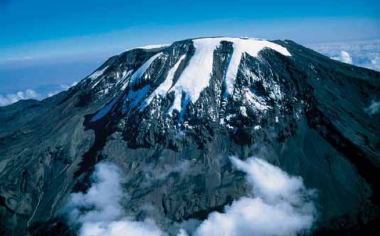
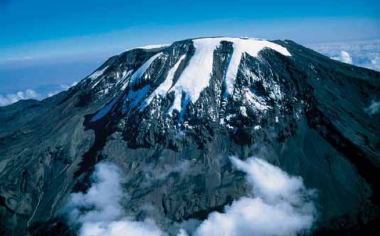

Tours and Package
Explore Tanzania like never before with our carefully crafted tours and travel packages designed for local explorers. Whether you're planning a weekend escape, a cultural journey, or an adventurous safari, we’ve got something for every budget and interest.
Northern Circuit Adventure
Destinations: Arusha, Kilimanjaro, Serengeti, Ngorongoro Crater
Duration: 5 Days / 4 Nights
Highlights:
• Visit Mount Kilimanjaro base
 


• Crater tour in Ngorongoro


Zanzibar Island Escape
Destinations: Stone Town, Nungwi, Paje
Duration: 4 Days / 3 Nights
Highlights:
• Relax on world-class beaches


Southern Safari Experience
Destinations: Mikumi National Park, Udzungwa Mountains
Duration: 3 Days / 2 Nights
Highlights:
• Game drives with chances to see elephants, lions, and giraffes
• Waterfall hikes in Udzungwa


Weekend Getaways
Destinations: Bagamoyo, Morogoro, Lushoto, Lake Duluti
Duration: 2 Days / 1 Night
Highlights:
• Ideal for quick city breaks
• Cultural tours and local cuisine
• Nature walks and relaxation
Starting from: TZS 200,000 per person
Customized Group Packages
Planning a family trip, student tour, or corporate retreat?
We offer tailor-made packages based on your schedule, group size, and interests.
Includes:
• Accommodation & meals
• Transportation
• Professional tour guides
• Entry fees and activities
What’s Included in All Packages?
• Comfortable accommodation


• 24/7 travel assistance
Our tours and packages are carefully designed to help you explore the best of Tanzania with comfort, fun, and unforgettable experiences. Whether you're looking for wildlife safaris, cultural tours, beach holidays, or mountain adventures, we have something for everyone. Choose a package that suits your needs and let us guide you on a journey to discover the beauty of Tanzania.